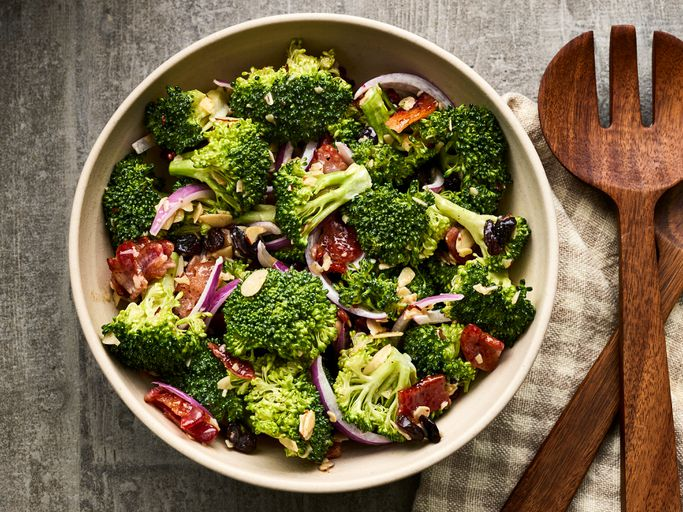

Salad

Description
A salad is a dish of mixed ingredients, often vegetables, that's usually served cold or at room temperature.
Salads are typically made with a dressing or condiment, which can come in many flavors.
Ingredients
- 1 cup mixed greens
- 1 cup baby spinach leaves
- ⅓ cup cucumber, sliced
- ⅓ cup carrot, shredded
- ⅓ cup carrot, shredded
- any veggies or any healthy green leafs of your choice
Steps
- Put all your mixed greens and spinach in a large bowl.
- Add in the cucumbers, carrots, bell pepper and tomatoes.
- Put in the protein of your choice.
- Form into four 3/4-inch-thick patties.
- Top with the tasty toppings, which are your pumpkin seeds, basil leaves and chickpeas.
- In a separate bowl, place all dressing ingredients and whisk until combined.
- Toss all salad ingredients in a medium bowl.
- Dress and plate your salad.*